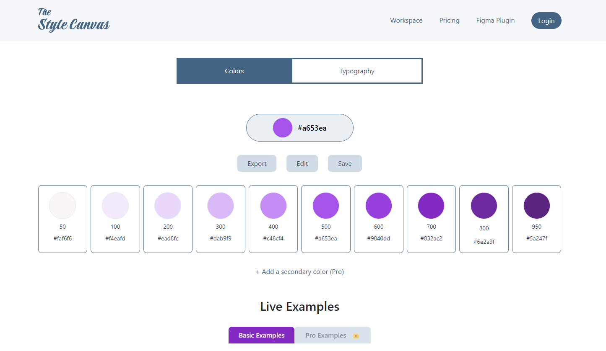

Simplify Your Design Workflow
Say goodbye to the hassle of picking the perfect colors and fonts. Whether you're an aspiring designer or seasoned professional, our platform empowers you to create, organize, and preview unique color palettes and typography sets—all in one place.
Create Tailored Colors with Ease
Effortlessly generate custom color palettes by selecting a base color, with automatically generated shades ranging from 50 to 950. This feature gives users full control over color variations, helping create the perfect balance between subtle and bold design choices.
Real-Time Design Previews
Watch design changes come to life instantly with live previews. As users modify colors or typography, updates are reflected in real-time across UI elements like buttons, headings, and cards. This ensures design consistency and accuracy, improving the user experience.
Flexible Typography Settings
Fine-tune typography with advanced options like font family, weight, base size, and line height. Tailor headings (H1-H6) and body text for a cohesive and professional look. Pro users can save these settings, making it easier to maintain brand consistency across projects.
Figma Integration for Pro Users
Seamlessly integrate your saved color palettes and typography settings with Figma using our exclusive plugin. This feature enables pro users to quickly apply saved styles, improving design efficiency and maintaining consistency across projects without extra manual work.